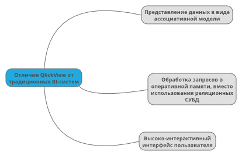

Платформа Бизнес-Аналитики «QlickView»
QlickView — это аналитическое программное обеспечение из категории business intelligence (бизнес-аналитика), которое позволяет пользователям, не имеющим специальных технических навыков, самостоятельно формировать отчеты и анализировать информацию о деятельности своего предприятия в самых разных разрезах, независимо от того, в каких учетных системах предприятия хранится эта информация (1С, Axapta, Access, Excel, Oracle, SAP, SQL Server и т.д.).
Ассоциативная модель данных QlickView
Ассоциативная модель данных представляет собой таблицы, связанные по ключевым полям. Ассоциативная модель создается динамически в момент загрузки данных в QlikView, при этом поля с одинаковыми названиями ассоциируются друг с другом. При выборе пользователем значения в одной таблице автоматически выбираются все ассоциированные значения в других таблицах.
Обработка данных в оперативной памяти (технология in-memory)
Вторым фундаментальным отличием QlickView является свой собственный патентованный механизм обработки данных, который обрабатывает все данные в оперативной памяти. При загрузке данных в оперативную память они сжимаются в несколько раз, поэтому данные в памяти занимают меньше места, чем в системах-источниках.
